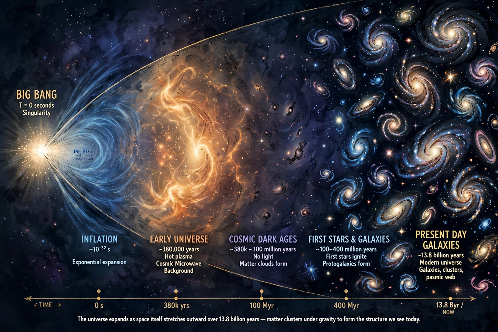

Big Bang

[Image: an artist's timeline of the expanding universe — a cone widening from a bright point, showing the cosmic microwave background and galaxy formation]The Big Bang is the prevailing cosmological model explaining the universe's origin and evolution: the universe began about 13.8 billion years ago in an extremely hot, dense state and has been expanding and cooling ever since. From this beginning it accounts for the observed expansion of space, the cosmic microwave background radiation, the abundances of light elements, and the large-scale structure of galaxies.
The model was prefigured by Georges Lemaître's 'primeval atom' hypothesis (1927–31) and Edwin Hubble's observation that galaxies recede at speeds proportional to their distance. The name 'Big Bang' was coined, somewhat dismissively, by Fred Hoyle in a 1949 radio broadcast; Hoyle favoured the rival steady-state theory.
Evidence
Three pillars support the model: Hubble's law of galactic recession; the cosmic microwave background, predicted in 1948 and discovered by Penzias and Wilson in 1965, a near-perfect thermal glow at 2.7 kelvin left over from the hot early universe; and primordial nucleosynthesis, which correctly predicts the cosmic abundances of hydrogen, helium and lithium.
Precise measurements by the COBE, WMAP and Planck satellites mapped the background's tiny fluctuations — the seeds of galaxies — and pinned down the universe's age and composition, including Dark matter and dark energy.
Open questions
The theory describes evolution from a fraction of a second after the beginning; what, if anything, preceded it — and whether cosmic inflation, a burst of exponential expansion in the first instants, set its initial conditions — remains under investigation. The ultimate fate of the universe depends on dark energy, discovered through observations in 1998 that the expansion is accelerating.